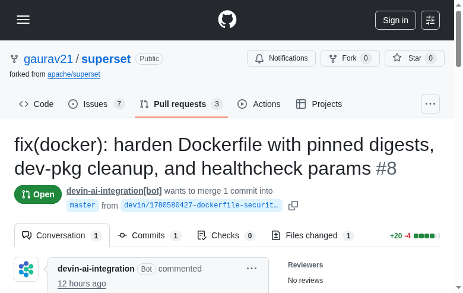
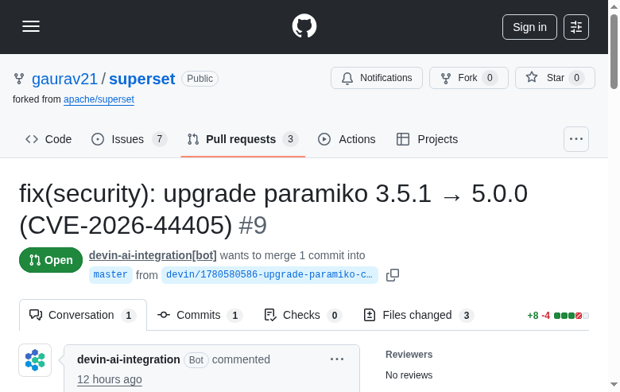
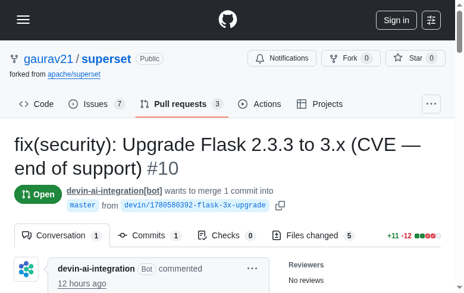
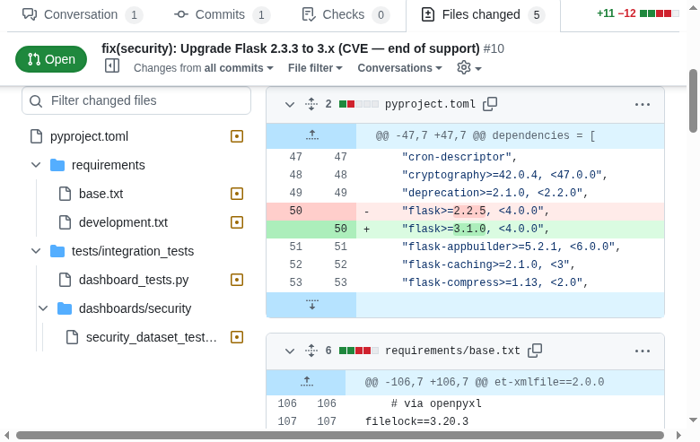

Trust Control Plane for Autonomous Security Remediation
Devin AI + Datadog
Gaurav Sharma
Act 1 — The Problem
Scanners find hundreds of CVEs. The list grows faster than anyone can triage it.
Engineers avoid dependency upgrades — they sit in the backlog for weeks, sometimes months.
Dependabot opens PRs for easy bumps — and gives up when upgrades break the build.
The 20% that tooling can't touch is 100% of the pain
The Insight
"ShieldOps isn't a faster vulnerability scanner.
It's a trust control plane for an autonomous engineering workforce."
Devin does the judgment-heavy remediation work that Dependabot can't, routes each change through a policy boundary so humans only review what needs a human, and uses Datadog to prove the fleet is safe to run.
Act 2 — The System
pip-audit, npm audit, trivy, semgrep
Severity × reachability × fix availability × complexity
Context-aware prompts. Reads CHANGELOGs, fixes breaking call sites.
Auto-merge · Human review · Blocked
What changed, why, blast radius, confidence score
Fleet health, trust split, cost, audit trail
The Hero Moment
Flask 2.3.3 → 3.x in Apache Superset. A major version upgrade. Dependabot opens a PR — the build breaks — it walks away.
Version bump breaks imports and deprecated API calls across the codebase
Reads the CHANGELOG, finds every affected call site, fixes them, re-runs tests
Clean PR with evidence bundle: what broke, what was fixed, confidence score
"That's the work only an autonomous coding agent can do."
Side by Side
The Trust Boundary
Tests pass, no breaking changes, high confidence, patch/minor upgrade, no sensitive paths
Major upgrade, breaking changes fixed, or sensitive path touched — with a 2-minute evidence bundle
Tests fail or confidence too low — nothing merges, alert fires, human loops in
Architecture
GitHub webhook, scheduled cron, or manual API trigger
Up to 3 Devin sessions in parallel with semaphore control
Every scan, session, and policy decision → Datadog
The Control Plane
"Is this thing safe to run?"
Safety Nets
If humans override Devin more than usual, something changed. This catches drift before it becomes a pattern.
Catches auto-merges below confidence threshold. A guardrail that should never fire — proving the boundary works.
Tracks ACU cost per fix. Alerts when a session burns tokens without converging. The budget question, answered.
Real Results
Pinned base images to SHA256 digests for tamper-resistant builds.
Purged dev packages after build. Added HEALTHCHECK params.

+20 −4 · 1 file
Upgraded paramiko 3.5.1 → 5.0.0 — SHA-1 removal, breaking changes handled.

+8 −4 · 3 files
Flask 2.3.3 → 3.1.0 — major version upgrade. Fixed breaking imports across 5 files in a 500K LOC codebase.

+11 −12 · 5 files · ⚡ The hero moment
The Hero Moment — Proof

flask>=2.2.5, <4.0.0 → flask>=3.1.0, <4.0.0
Updated across pyproject.toml, requirements/base.txt, requirements/development.txt, integration tests, and security dashboard tests.
pyproject.toml dependency specrequirements/base.txt pinrequirements/development.txtDependabot would have bumped the version, watched the build fail, and walked away.
Demo
Live trigger → Devin session → Policy decision → Datadog dashboard
System Architecture
Policy Engine
Every Devin result passes through this trust boundary before any code merges.
Evaluated top-to-bottom. First match wins. Full audit trail to Datadog.
Results
Why Devin
Detection is solved. Easy bumps are solved.
The judgment-heavy, breaking-change work wasn't — until now.
CHANGELOGs, migration guides, error tracebacks
Find and fix call sites in 500K+ line repos
Run tests, read failures, fix, repeat — autonomously
Next steps
Wire into CI · Expand auto-merge policy as trust grows · Scale across repos · ACU budgeting
Explore
gaurav21/shieldops — 3,700 lines Python
gaurav21/superset — 8 issues, 10 Devin PRs
5-min walkthrough — live trigger to PR
Built by Gaurav Sharma · Devin AI + Datadog